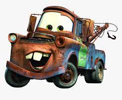
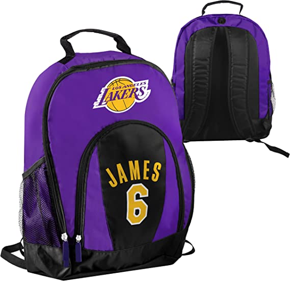
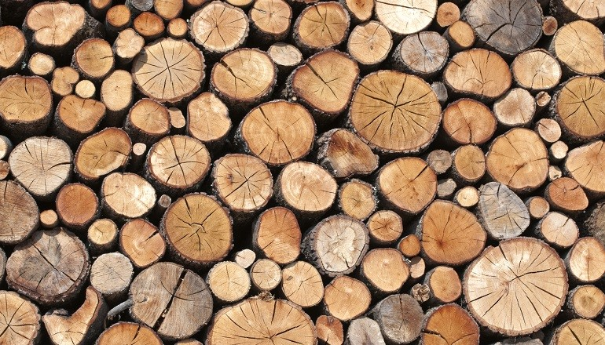
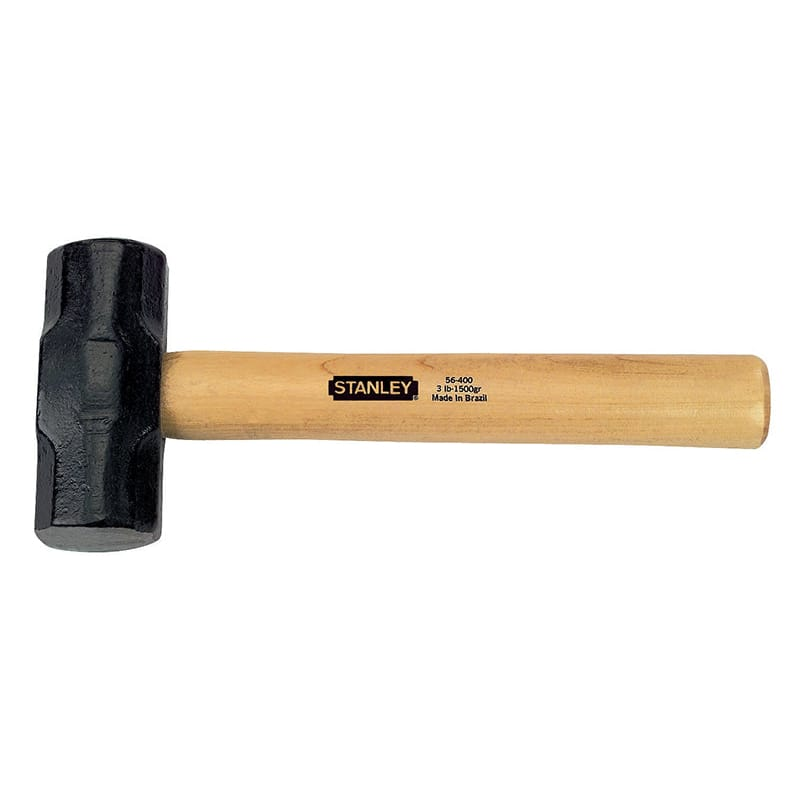

En esta pagina se encuentran las palabras mas comunes con la letra M
Mate, es uno de los personajes principales en Cars y sus secuelas, Cars 2 y Cars 3. También hace aparición en Mater's Tall Tales y en otros medios de la franquicia.
Las medallas tienden a ser discos metálicos, similares en apariencia a las monedas, aunque usualmente de mayor diámetro y relieve pronunciado.
Bolsa de lona o de otro material resistente que, provista de correas para ser cargada a la espalda
La madera es el material que constituye la mayoría del tronco de árbol. Se compone de fibras de celulosa unidas con lignina.
Un mazo es una herramienta de mano que sirve para golpear o percutir; tiene la forma de un martillo, pero es de mayor tamaño y peso.
